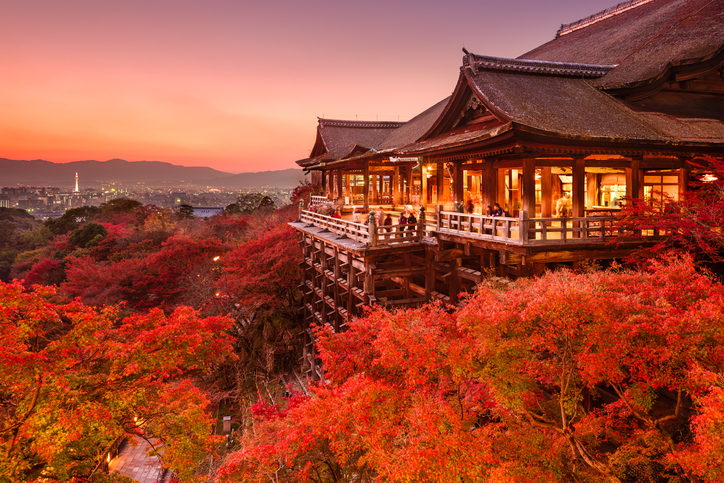

Por que o Japão?
O Japão é um país que mistura tradição e modernidade de uma forma única. Desde as ruas movimentadas de Tóquio até os templos tranquilos de Kyoto, cada canto desse país tem uma história para contar.

Destaques do Japão

Templos Históricos

Culinária Incrível